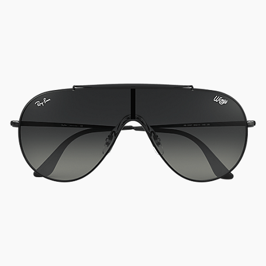
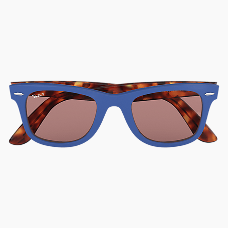
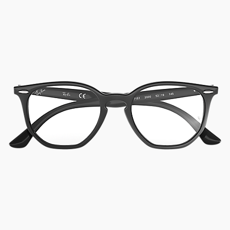

Tendencias
Las tendencias gafas 2019 para la temporada primavera / verano son las gafas de sol de aviador, que han sido tan populares en años anteriores. Sin embargo, las gafas de sol de ojo de gato y las gafas de sol triangulares también seguirán siendo muy populares. En general, el efecto que se quiere conseguir y que es parte de las tendencias de las gafas de primavera de 2019 fue futurista, innovador y elegante, aunque también hubo algunas opciones más retro si eso es lo que más te gusta.
  